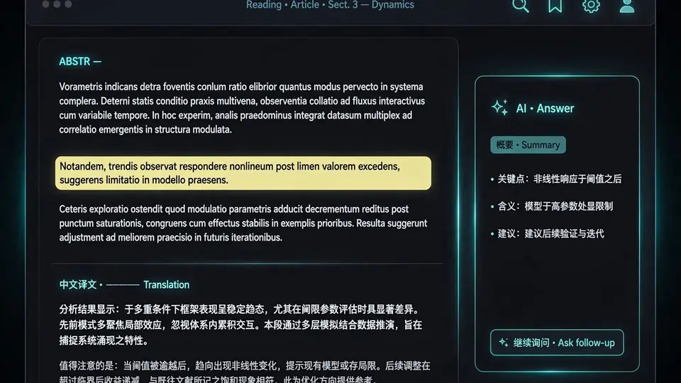

Read arXiv papers like a well-typeset book: a hands-on guide to EasyRead
Most translated PDFs read like they were shredded and taped back together: formulas break, tables collapse, and you can't tell which sentence the model invented. EasyRead re-typesets any paper as a bilingual book — on your own machine, with AI answers kept in the margin where they can't contaminate the text.

You know the failure mode. You paste a PDF into a translation tool and get back a wall of text where the equations have dissolved into punctuation soup, the tables have become run-on sentences, and there is no way to check a single sentence against the original without opening a second window and hunting for it. Machine translation of papers isn't a language problem. It's a layout problem.
EasyRead — Edward Lai's open-source project (Edwardxlai/easyread, MIT) that picked up 600+ GitHub stars in its first few days — attacks the layout problem head-on. It imports your PDF, translates it page by page in the background, and re-typesets the whole thing like a book: serif body text, KaTeX-rendered formulas laid out as the original had them, proper three-line tables, and the original page sitting one click away with your current paragraph boxed in blue. AI explanations are allowed, but only in the margin — the main text stays faithful, so you can always tell which words are the paper's and which are the model's.
This tutorial walks through the full setup: install, pick a translation engine, import your first paper, read bilingually, interrogate it with AI, and hand the whole thing to your coding agents. Every command comes from the project's README, verified October 2, 2026.
What you'll need#
- A Windows, macOS (Apple Silicon), or Linux machine.
- One model engine for translation and Q&A. Pick one:
- Claude Code (the README's recommendation) — install and log in; EasyRead uses your subscription quota, no API key, and it checks the original page images when re-laying formulas.
- Codex CLI — uses your ChatGPT account, no key either.
- An API key — DeepSeek, Zhipu, Alibaba Bailian, Kimi, SiliconFlow, or ModelScope. The README notes DeepSeek runs about a few cents for a 20-page paper, and Zhipu's GLM-4.7-Flash plus SiliconFlow's small models have free tiers.
- Ollama or LM Studio — fully local and free; the README recommends
qwen3.5:9b, or the 4b variant on a small GPU.
- Python 3.10+ only if you run from source instead of using an installer.
Step 1 — Install it#
The fastest path is an installer from the project's Releases page — no Python required:
- Windows:
EasyRead-Setup-x.x.x.exe. It isn't code-signed, so SmartScreen will complain; use "more info → run anyway". - macOS:
EasyRead-x.x.x-arm64.dmg. It's only temporarily signed, so the first launch gets intercepted — open System Settings → Privacy & Security and allow it, or remove the quarantine flag yourself:xattr -dr com.apple.quarantine /Applications/EasyRead.app - Linux:
EasyRead-x.x.x.AppImage,chmod +xit and run.
Prefer the terminal? Clone the repo or grab the release zip, then:
./start.sh # macOS / Linux (double-click start.cmd on Windows)Or install it as a Python package — your library then lives in ~/EasyRead:
pip install git+https://github.com/Edwardxlai/easyread
easyreadEither way, your browser opens http://127.0.0.1:8765. The server binds to localhost only — nothing is exposed to your network.
Step 2 — Pick your translation engine#
Open Settings → Models. EasyRead auto-detects what's installed on your machine, and a "test translate one sentence" button tells you immediately whether your pick works. The full menu, straight from the README:
- Claude Code / Codex — no key, subscription quota. If you use Claude Code from your terminal, EasyRead needs the same network access your terminal has.
- API providers — DeepSeek, Zhipu, Bailian, Kimi, SiliconFlow, ModelScope for direct connections; OpenAI, Anthropic, Gemini, OpenRouter, Groq, Cerebras if you have a proxy. Custom OpenAI-compatible endpoints work too — both Chat Completions and Responses formats — with a "fetch model list" button that pulls the model names from your endpoint.
- Local — Ollama or LM Studio. Completely offline, completely free.
Translation and "ask AI" use separate model assignments on the same page, so you can translate with a cheap model and interrogate with a strong one. Every translation and every answer logs its token usage, and if you use a Claude subscription it shows your 5-hour and 7-day quota and when it resets. Don't want imports to start translating immediately? Turn off "auto-translate after import" in settings — you can always translate later, or let an agent do it.
Step 3 — Import your first paper#
Drag a PDF into the window. Or skip the file entirely: paste an arXiv ID, a DOI, a paper title, or an OpenReview / ACL / NeurIPS / bioRxiv / PMC / journal link, and EasyRead fetches the public PDF and fills in authors, year, and venue. You can even paste directly into the library with Ctrl+V.
At import time you choose: which model translates this one, whether to translate the full paper or just the body, a page range, or "read the original" — typeset but untranslated, with translation one click away. Papers over 60 pages trigger a confirmation first (the limit is adjustable in settings; 0 means never ask).
Translation runs in the background, page by page. Already-translated pages are readable immediately; untranslated pages show the original. A failed page (rate limit, network, exhausted quota) retries automatically, then gets skipped so the rest finishes — one button retries all the failures afterward. Nothing you edited gets clobbered: your paragraph edits are saved first, and if a later re-translation touches an edited paragraph you get a warning, not an overwrite.
Step 4 — Read it like a book#
This is where the layout work pays off. The text is set like a real book — comfortable line length, KaTeX formulas re-typeset from the original, tables as three-line tables, references kept in the original language. Click any paragraph for an action bar. Flip on "compare" and the English sits under each translated paragraph. Open the original-page panel on the right and it follows your reading position, boxing your current paragraph on the scanned page so you can verify any sentence against the source in one glance.

Annotate as you go: four highlighter colors plus underline, margin notes, and a question button on any selection. Your notes roll up in original order and export to Markdown — straight into Obsidian or Notion. Citations copy as GB/T 7714, APA, or BibTeX, deleted papers go to a recycle bin, and reading progress, stars, and pinned papers make the sidebar feel like a chat app for your library. Press ? anytime for the shortcut list.
Step 5 — Ask the AI (in the margin)#
The "ask AI" panel on the right streams answers as you read. Drag several selections into the input to quote them all at once. Ask "what connects my red highlights?" and it finds your red marks by color. The key design decision: AI answers live in the margin, visually separate from the translation, so the paper's words and the model's words never mix.
One mode deserves a mention for its honesty: the ASD-STE100 answer style borrows short-sentence and terminology-consistency principles from the Simplified Technical English standard to give concise answers that keep technical terms, formulas, and numbers intact — and the README explicitly notes this does not certify anything as standards-compliant, and long contexts get summarized with their scope stated. That kind of candor in a README is a good sign.
Step 6 — Hand it to your agents#
EasyRead ships a CLI, so Claude Code or Codex can read your notes, answer your open questions, and write the answers back to the right paragraph:
easyread list # list the library
easyread import paper.pdf # or an arXiv ID / link
easyread status ID # progress, your edits, notes, open questions
easyread discuss ID --from answers.json # write a discussion into the margin
easyread export ID # export a single-file offline HTMLCopy skill/paper-reading/SKILL.md from the repo into ~/.claude/skills/ or ~/.codex/skills/ and your agents learn the workflow. Run easyread --help for the full command list.
Two export paths matter. Offline HTML bundles translation, formulas, page images, and your annotations into one file (about 10 MB for a 27-page paper) — anyone with a browser can read it, no install. And the whole library is plain JSON: one folder per paper with the PDF, page images, translation, notes, and discussions, plus config.json and prefs.json. Point the "cloud library" setting at a synced folder and your papers follow your own cloud drive. Backups are just file copies — no database to dump.
What you built#
A personal paper library where every PDF is a typeset bilingual book, AI answers stay in the margin where they belong, your highlights and notes export cleanly, and your coding agents can read and extend the whole thing from the terminal. Papers are available in Chinese, Japanese, Korean, Spanish, French, or German, and the UI itself speaks Chinese or English.
Honest limitations#
- Your papers go to your model. Translation and Q&A send paper content to whichever engine you picked. If that's a problem, the Ollama/LM Studio path is fully offline — use it.
- Translation quality follows the model. The layout is EasyRead's; the words are your model's. A weak local model will give you weak translations, beautifully typeset.
- Garbage in, garbage out. Formulas and tables are re-typeset from PDF parsing, so a scanned or badly-encoded PDF still yields a badly-encoded layout.
- Young project. Six hundred stars and days old means rough edges and breaking changes are the norm, not the exception. The installers are unsigned (Windows) or only temporarily signed (macOS) — treat the quarantine dance as the price of early adoption.
- Big papers need a nudge. Anything over 60 pages asks for confirmation before translating the whole thing — sensible, since you're paying per token.
The takeaway#
The best thing about EasyRead isn't the translation — it's the epistemology. Main text and AI commentary are different kinds of words, and this is the first reading tool I've seen that refuses to let them touch. Install it, point it at the paper you've been avoiding, and read the thing like the book it should have been.
Sources: the Edwardxlai/easyread repository (README.md, README.en.md, docs/data-format.md, skill/paper-reading/SKILL.md), verified against the tree pushed October 2, 2026 — 615 stars, MIT license. Every command and feature above is quoted from the project's own documentation.